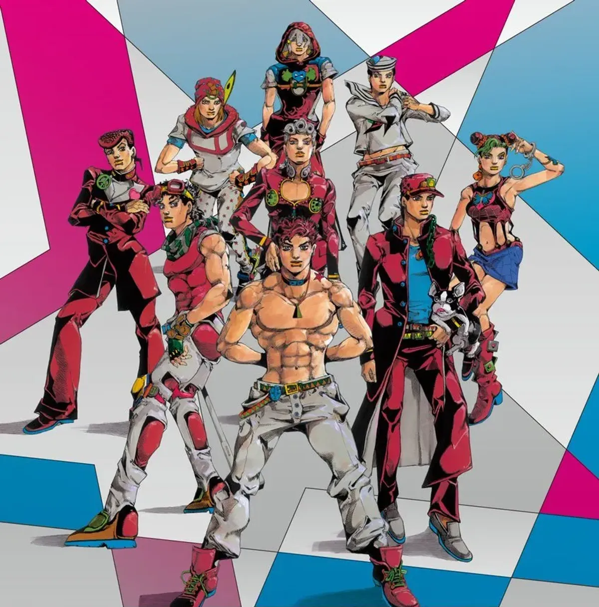

Conheça o universo, personagens, aventuras e poderes bizarros!
Jojo bizarre Adventure, conhecido também como JJBA, é uma aventura criada pelo japonês Hirohiko Araki, que acompanha diferentes gerações da família Joestar. A história é marcada por aventuras, batalhas, poderes e personagens únicos, com diferentes personagens

Todos esses são fundamentais para essa grande e bizarra aventura de JJBA! um fato curiso é que esse anime apresenta um estilo muito diferente dos outros animes, o que o torna único, sendo marcado pelo seu traço diferente e inesquecivel pelos seus fans.